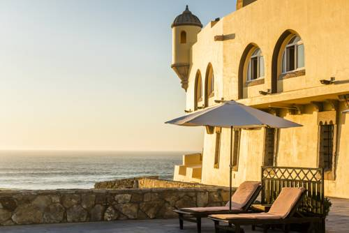

Este alojamento fica a 3 minutos a pé da praia. Construído no local de uma fortaleza do século XVII, este luxuoso hotel dispõe de um restaurante gourmet premiado com estrela Michelin e de vistas para o Oceano Atlântico. Proporciona vistas para o paraíso português dos surfistas, a Praia do Guincho.
Sinuosas escadas de pedra, piso de terracota e tectos em tijolos expostos criam uma atmosfera medieval. O claustro central está equipado com sofás de veludo e lustres de ferro forjado.
Os quartos do Hotel Fortaleza do Guincho estão decorados com tecidos luxuosos, mobiliário em madeira escura e pinturas com molduras douradas. Alguns quartos têm varandas privadas fechadas com vistas para o oceano.
O restaurante com estrela Michelin tem fortes influências portuguesas e serve pratos baseados em ingredientes nacionais de qualidade. Também são servidos menus de degustação. A extensa carta de vinhos é escolhida a dedo por um escanção premiado. No Fortaleza do Guincho, os hóspedes podem desfrutar de excelentes refeições na privacidade do seu quarto.
Depois de um dia a visitar o Parque Natural Sintra-Cascais, os hóspedes podem saborear um cocktail do bar do Fortaleza do Guincho Hotel, sentados na vasta esplanada com vistas para o mar.
Esta propriedade também tem uma das localizações melhor pontuadas em Cascais! Os hóspedes estão mais satisfeitos com ela do que com outras propriedades da mesma área.